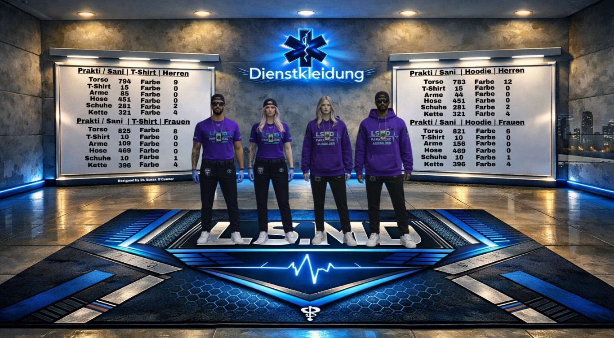

📘 Prakti/Sani-Ausbilder Regelwerk
Dieses interne Regelwerk dient der Sicherstellung von Professionalität, Struktur, Kommunikation und Qualität innerhalb der gesamten Prakti/Sani-Ausbilder Abteilung des LSMD. Alle Mitglieder der Abteilung sind verpflichtet, die folgenden Regelungen, Dienstvorschriften und internen Organisationsabläufe vollständig einzuhalten. Das Ziel dieses Systems ist eine professionelle Ausbildung neuer medizinischer Mitglieder, eine starke interne Kommunikation sowie ein qualitativ hochwertiger medizinischer Roleplay-Standard. Die Leitung behält sich vor, Regelungen jederzeit anzupassen oder organisatorische Änderungen vorzunehmen, um den Ablauf innerhalb der Abteilung dauerhaft stabil, professionell und effizient zu halten.
🚑 Einsatzleitung
Die Prakti/Sani-Ausbilder übernehmen innerhalb des LSMD eine zentrale Rolle bei der Ausbildung, Koordination und Betreuung neuer Mitglieder.
📡 Discord Organisation
Alle internen Besprechungen, Prüfungen, organisatorischen Entscheidungen und Absprachen finden strukturiert über das Discord-System statt.
📚 Ausbildungssystem
Neue Mitglieder werden schrittweise begleitet, unterstützt und professionell an die medizinischen Systeme des LSMD herangeführt.
§1 – Vorbildfunktion
Alle Ausbilder repräsentieren das LSMD sowohl intern als auch extern. Ein respektvoller, professioneller und ruhiger Umgang mit Mitmenschen wird jederzeit vorausgesetzt. Unnötige Provokationen, respektloses Verhalten oder unprofessionelles Auftreten schaden dem Gesamtbild der Abteilung und werden nicht toleriert.
§2 – Fachliche Kompetenz
Alle Mitglieder der Ausbilder-Abteilung sind verpflichtet, sämtliche relevanten Vorschriften, medizinischen Abläufe und Ausbildungsstrukturen zu kennen. Wichtige Informationen müssen eigenständig verfolgt und umgesetzt werden.
§3 – Teamarbeit
Die gesamte Abteilung basiert auf Zusammenarbeit, Kommunikation und gegenseitiger Unterstützung. Fehler werden konstruktiv angesprochen und professionell gelöst.
§4 – Interne Absprache
Prüfungen, Gespräche, organisatorische Entscheidungen oder sonstige Aufgaben müssen intern abgesprochen werden. Eine klare Kommunikation innerhalb des Teams ist essenziell, um Missverständnisse oder organisatorische Probleme zu vermeiden.
§5 – Durchführung
Prüfungen und Einstellungen finden ausschließlich in den vorgesehenen Bereichen statt. Die Organisation erfolgt strukturiert und nachvollziehbar. Neue Mitglieder sollen professionell empfangen und betreut werden.
§6 – Organisation
Prüfungstermine sollen frühzeitig geplant werden, damit alle Beteiligten ausreichend Zeit zur Vorbereitung haben. Spontane Änderungen sind möglichst zu vermeiden.
§7 – Vertraulichkeit
Interne Dokumente, Ausbildungsunterlagen und organisatorische Informationen dürfen nicht an außenstehende Personen weitergegeben werden. Alle Dokumentationen sind sauber, vollständig und professionell zu führen.
§8 – Förderung neuer Mitglieder
Neue Mitglieder sollen aktiv begleitet, unterstützt und motiviert werden. Eine gute Ausbildung basiert nicht nur auf Fachwissen, sondern ebenfalls auf respektvoller Kommunikation und Geduld.
Offizielle LSMD Dienstkleidung
Die offizielle Dienstkleidung der Prakti/Sani-Abteilung ist verpflichtend einzuhalten. Das äußere Erscheinungsbild repräsentiert Professionalität, Ordnung und die Struktur des gesamten Medical Departments.
